Электрический заряд q — это скалярная физическая величина, определяющая способность тела быть источником электромагнитного поля и принимать участие в электромагнитном взаимодействии
Понятие «электрический заряд» впервые ввел Кулон в 1785 году
Единица измерения электрического заряда в СИ – Кулон [Кл]
1 Кулон — это электрический заряд, проходящий через поперечное сечение проводника при силе тока 1 А за время 1 с
Элементарный электрический заряд e — это фундаментальная физическая постоянная, определяющая минимальную порцию электрического заряда
е = 1,6 ∙ 10-19 Кл
Роды электрических зарядов:
Отрицательные Наименьшая частица, имеющая элементарный отрицательный электрический заряд, называется электроном.
Положительные Наименьшая частица, имеющая элементарный положительный электрический заряд, называется протоном.
Свойства электрических зарядов
• Заряды электрона и протона численно равны и отличаются только знаком
• Электрические заряды не возникают и не исчезают, они передаются от одного тела к другому или перемещаются внутри тела
Взаимодействие зарядов
Одноимённые заряды отталкиваются, разноимёеенные заряды притягиваются
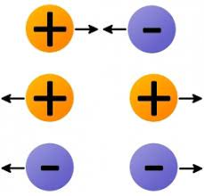
Закон сохранения электрического заряда
Изолированная система — это система, в которой через ограничивающую ее поверхность не проникают заряженные частицы
В изолированной системе алгебраическая сумма зарядов всех тел остается постоянной
Закон сохранения электрического заряда является фундаментальным законом природы. Он экспериментально подтвержден Фарадеем в 1845 г
В зависимости от наличия свободных зарядов все тела делятся на следующие:
Проводники Электрические заряды могут перемещаться по всему их объему тела (Вещества, проводящие электрический заряд) Например: металлы, тело человека, вода, Земля, электролиты
Диэлектрики отсутствуют свободные электрические заряды, тело содержит только связанные заряды, входящие в состав атомов и молекул (Вещества, не проводящие электрический заряд) Например: резина, стекло, сухое дерево, газы (воздух)
Закон Кулона
Сила взаимодействия F двух неподвижных точечных зарядов q1 и q2 пропорциональна произведению величины этих зарядов и обратно пропорциональна квадрату расстояния r между ними
k-коэффициент пропорциональности k=9*109 Н/Кл2
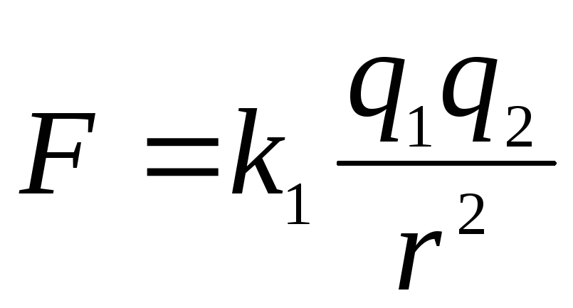Электростатическое поле
Электрическое поле — это особая форма существования материи, посредством которой взаимодействуют электрические заряды
Электростатическое поле — это поле, посредством которого осуществляется кулоновское взаимодействие неподвижных электрических зарядов
Пробный заряд q0 — это единичный положительный точечный заряд
Пробный заряд q0 используют для обнаружения и исследования электростатического поля. Пробный заряд не вызывает заметного перераспределения зарядов, создающих поле. 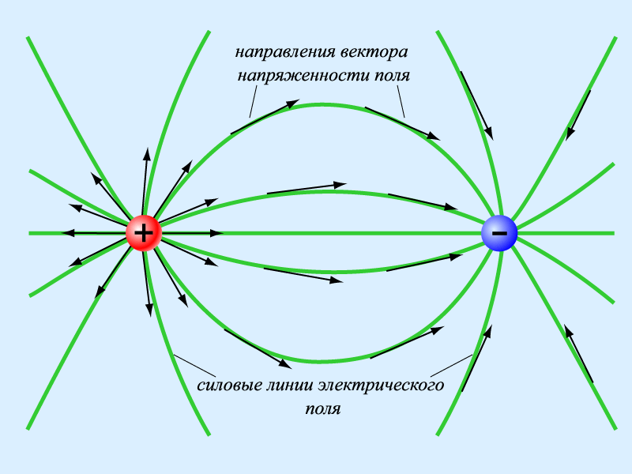
Принцип суперпозиции сил: Результирующая (равнодействующая) сила равна векторной
сумме всех сил, действующих на тело:
Алгоритм решения задач на определение равнодействующей силы
1. Сделать чертеж, указать расположение всех зарядов и их знаки.
2. Выделить заряд, для которого определяют равнодействующую
3. Пронумеровать остальные заряды.
4. Определить расстояния от веленного заряда до всех остальных.
5. Построить все силы, действующие на интересующий нас заряд, при этом необходимо
учитывать знаки зарядов, их модули и расстояния между зарядами.
6. Найти геометрическую (векторную) сумму всех сил, действующих на выделенный заряд.
7. Пользуясь формулами геометрии и законам Кулона, определить модуль
равнодействующей.
Потенциальная энергия взаимодействия двух
зарядов W (Дж)
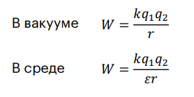 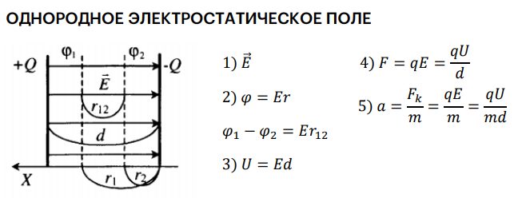
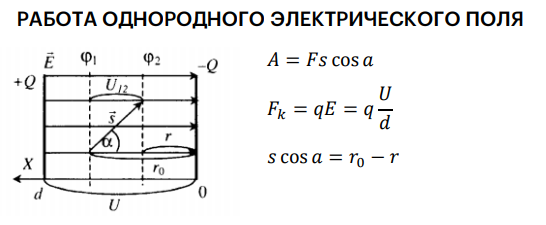
Конденсаторы
Конденсатор – набор проводников, служащий для накопления электрического заряда.
Конденсаторы состоят из двух проводников и разделяющего их диэлектрика, причем толщина диэлектрического слоя много меньше размеров проводников
Электроемкость (емкость) – величина, равная отношению заряда переданного проводнику к потенциалу этого проводника.
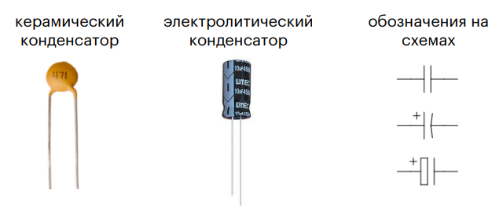
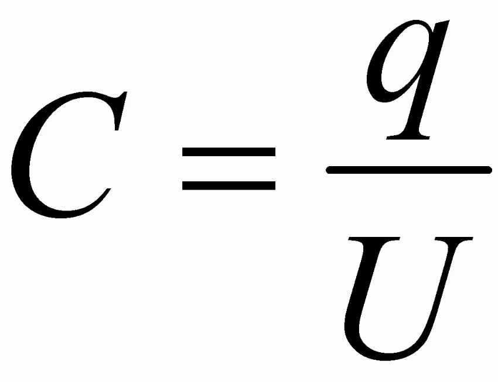
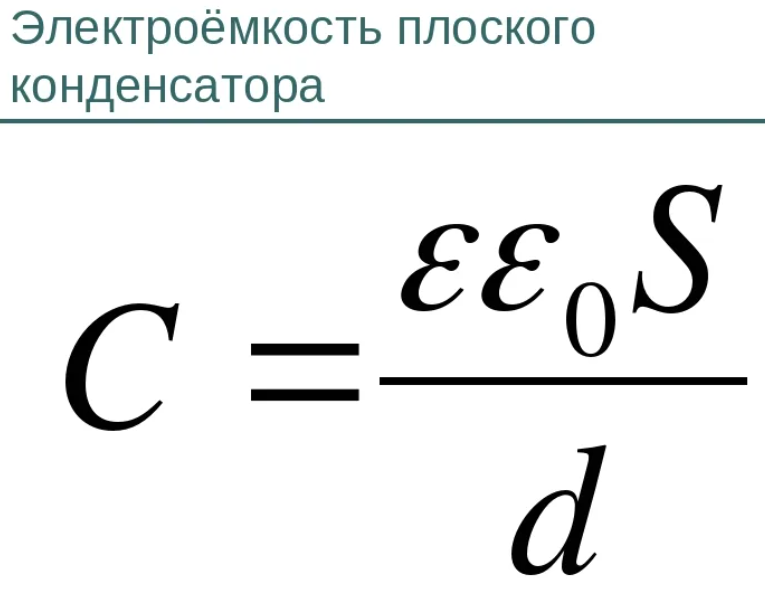 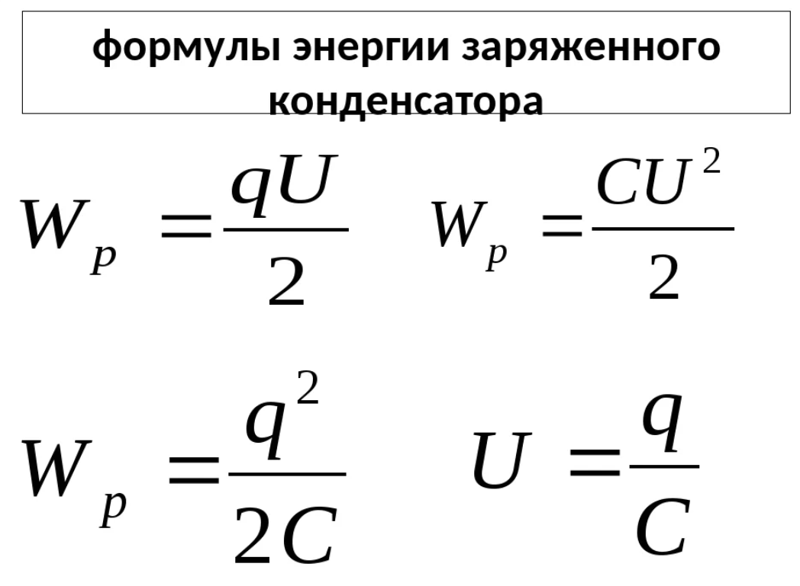 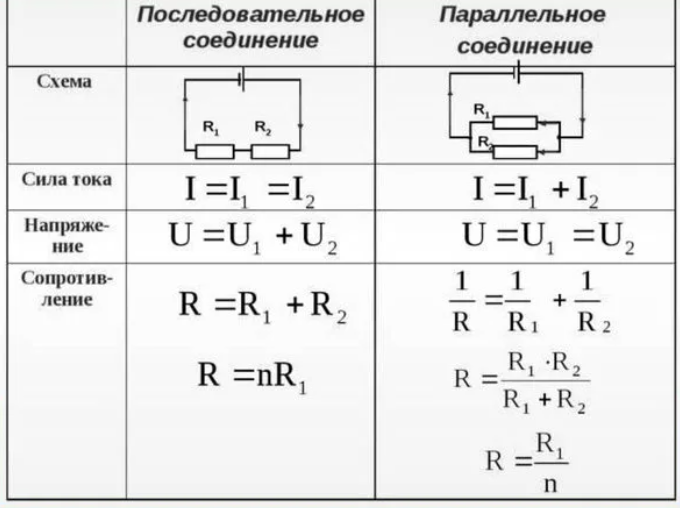
Постоянный ток Упорядоченное движение свободных носителей электрического заряда (электронов или
ионов) называется электрическим током.
Сила тока I – скалярная физическая величина, равная заряду, проходящему через
поперечное сечение проводника за единицу времени 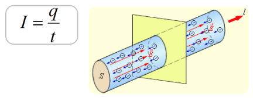